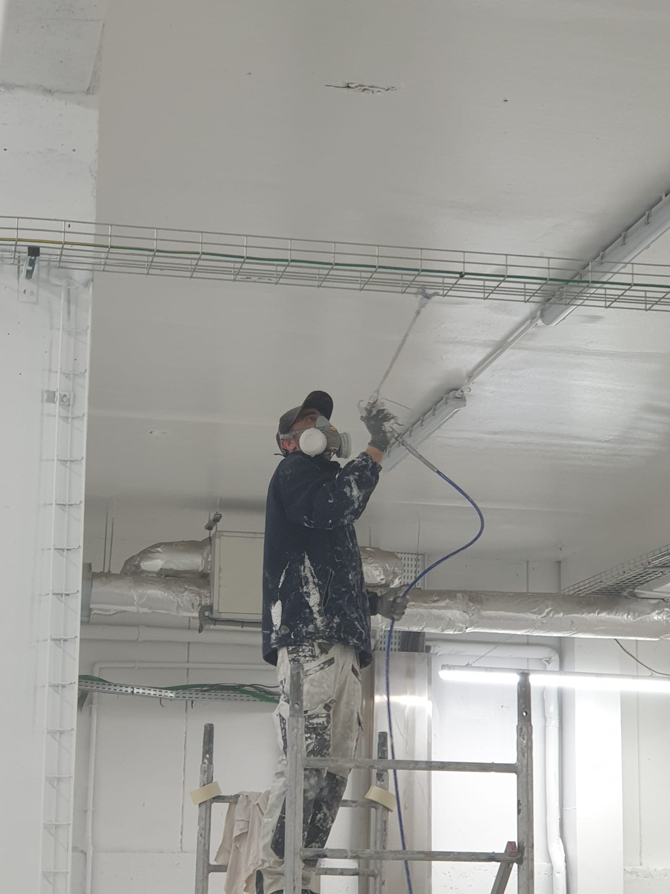
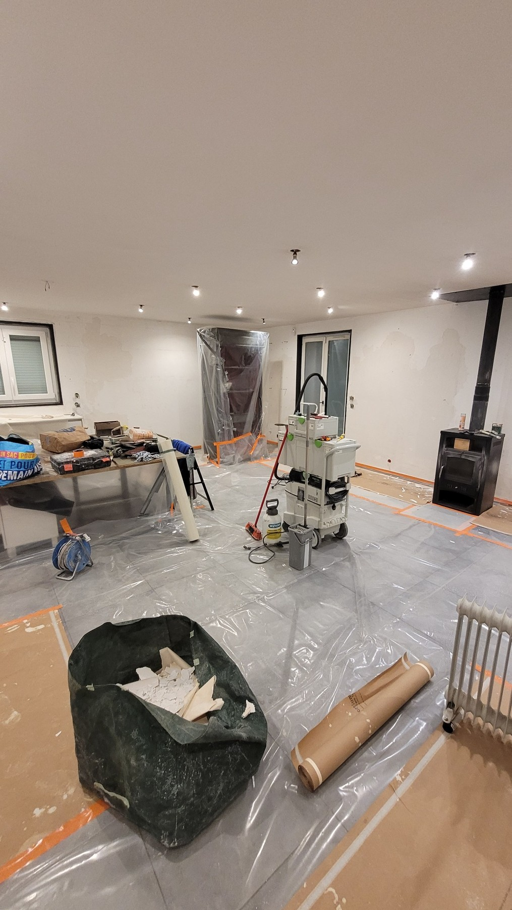
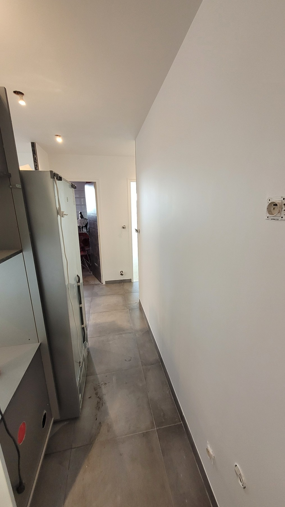
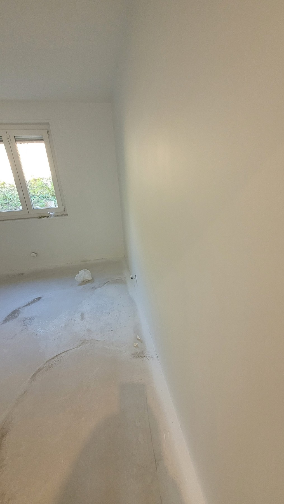
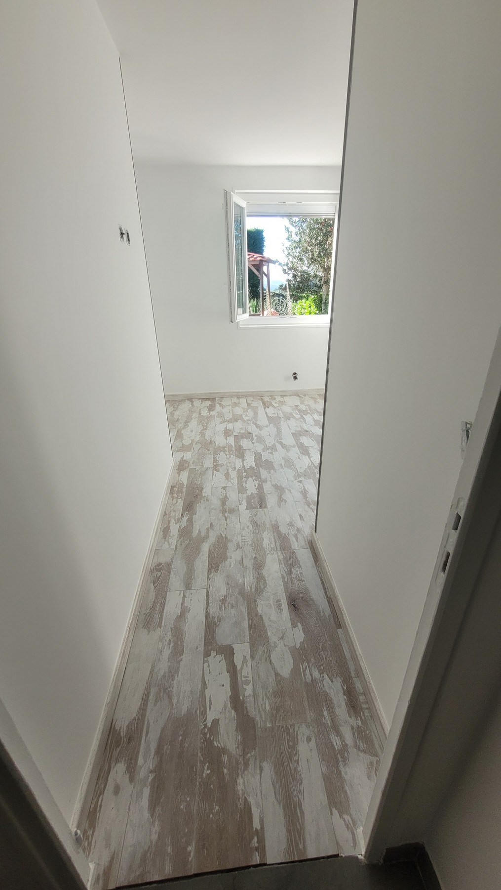
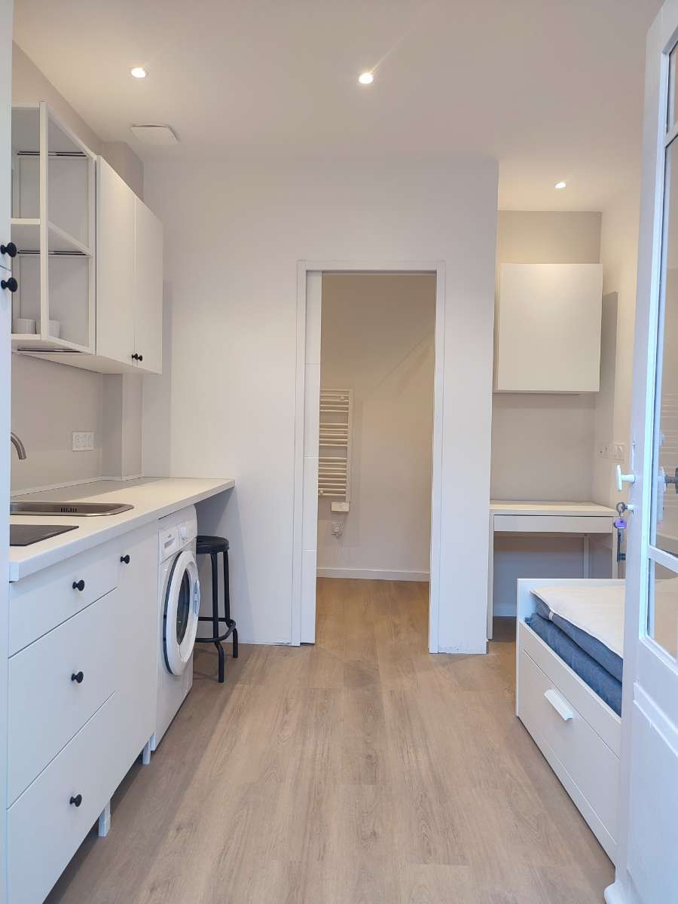

Peinture appartement
Remise en peinture complète ou partielle, avant emménagement, après travaux ou entre deux locations.
Préparation, ratissage, murs et plafonds avec application manuelle ou Airless selon le chantier. La finition est adaptée à l’état réel des supports.
Une finition régulière commence avant la peinture : reprises, enduits, ratissage, ponçage et impression sont adaptés à l’état des murs et plafonds.
Remise en peinture complète ou partielle, avant emménagement, après travaux ou entre deux locations.
Préparation et peinture de plafonds, y compris après reprise d’enduits, fissures ou défauts de surface.
Remise à niveau d’un mur ou plafond lorsque l’état général demande plus que quelques reprises ponctuelles.
Reprises localisées et enduits adaptés à l’état du support avant la finition.
Application mécanisée adaptée à certaines grandes surfaces et configurations de chantier.
Rouleau et brosse lorsque la configuration du chantier ou les reprises nécessitent une application traditionnelle.
Application Airless, protection du chantier et résultat après préparation des murs et plafonds.






Indiquez les pièces concernées, les surfaces approximatives, l’état des murs ou plafonds et joignez quelques photos si possible.
La surface compte, mais aussi l’état des supports, le niveau de préparation, l’accès, les protections nécessaires et le résultat attendu.
Non. Le ratissage est utile lorsque l’état général du support le justifie. Des reprises localisées peuvent suffire sur un mur déjà régulier.
Le choix dépend de la surface, de la configuration du chantier, de la préparation et du rendu attendu. L’Airless n’est pas utilisé systématiquement.
Oui, selon leur nature. Certaines zones nécessitent une reprise localisée et un enduit adapté avant finition.
La commune, le nombre de pièces, les surfaces approximatives, l’état des murs ou plafonds et quelques photos sont particulièrement utiles.
{kind=link}
{kind=link}
{kind=link}
{kind=link}
{kind=link}
{kind=link}